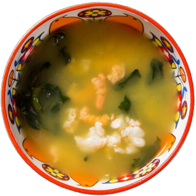
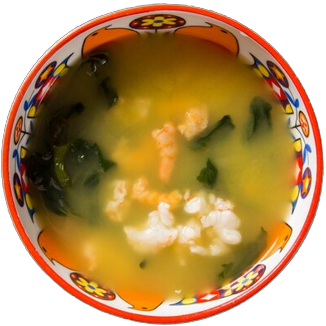

GASTRONOMIA PARAENSE É A MAIS BEM AVALIADA DO PAÍS
Pato no tucupí, tacacá, maniçoba, moquecas, caruru e chibé são algumas iguarias que podem ser encontradas em Belém

Pato no tucupí, tacacá, maniçoba, moquecas, caruru e chibé são algumas iguarias que podem ser encontradas em Belém

Quando o assunto é gastronomia, o Pará desponta entre as estrelas nacionais com uma culinária de
ingredientes da cultura indígena, temperada com influências portuguesa e africana. Essa mistura
regionalíssima fez com que a capital do estado, Belém, se destacasse neste quesito como
o destino brasileiro mais bem avaliado pelos turistas estrangeiros que visitaram o Brasil em
2016, segundo pesquisa do Ministério do Turismo.
De acordo com o estudo, enquanto a gastronomia brasileira recebeu nota máxima (muito bom e bom), de 95,4% dos visitantes internacionais, a de Belém chegou ao topo, com 99,2% de aprovação. Os cheiros e sabores da fauna e da flora da Amazônia - açaí, camarão, caranguejo, peixes, além de ervas - como o jambu -, pimentas e a famosa farinha de mandioca - encantaram turistas da França, principal emissor de turistas para Belém em 2016, com 34% do total de visitantes, e também do Suriname, Estados Unidos, Holanda, Argentina, Alemanha, entre outros. Confira a matéria completa aqui.
Antes de citar as receitas típicas, precisamos falar dos principais ingredientes que aparecem nesta culinária. Ingredientes, inclusive, que são considerados exóticos em outros estados do Brasil.
Vamos começar pelas frutas? Muito provavelmente você já deve conhecer o cupuaçu, mas você já experimentou o baruci, o taperebá ou o muruci? No Pará, elas são muito comuns no preparo de várias sobremesas, principalmente de geleias e sorvetes. Além disso, também temos a forte presença do Açaí, que na Culinária Paraense é consumido de uma forma bem diferente comparado a outras regiões. Os principais acompanhamentos são farinhas e até mesmo pescados. Agora, falando de ingredientes que aparecem mais em pratos salgados, não podemos deixar de citar o famoso tucupi.
Esse caldo amarelado encontrado facilmente em feiras livres é um dos produtos mais marcantes da gastronomia da região. Afinal, ele traz um toque de acidez especial para as receitas. Uma curiosidade interessante é que seu processo de produção pode levar vários dias, pois é necessário eliminar todas as toxinas que ele possui quando está em seu estado natural.
Abaixo, segue uma lista com os principais pratos típicos da culinária paraense:
Belém do Pará é uma daquelas cidades que está na lista de desejos de muitos brasileiros que amam belas paisagens e comida regional. A natureza, as pessoas, a música, tudo se torna um atrativo para visitar o local. E o que dizer da culinária diferenciada? Abaixo estão listados os restaurantes em Belém mais visitados pelos turistas:
É açaí raiz que você deseja experimentar? Então vá ao Point do Açaí. Proporcionando uma experiência única, o restaurante oferece o que há de melhor na culinária regional. O cardápio é popular, com pratos sem ou com açaí e preços acessíveis. A empresa está localizada em três unidades diferentes, no Point Veiga, Point Boulevard e na central de abastecimento.
Se essa é a sua primeira viagem ao Pará, não deixe de visitar o Ver-o-Açaí. Considerado um dos melhores restaurantes em Belém, ele é uma ótima opção para quem deseja experimentar os pratos típicas da cidade, agradando a todos pela comida saborosa e pelo atendimento de primeira. O restaurante fica localizado na Rua Antônio Barreto, 157 e funciona todos os dias da semana, das 12h às 22h.
Não se surpreenda quando for à Belém e encontrar um restaurante de comida nordestina. Conhecido pela sua carne do sol saborosa, a também churrascaria é uma boa opção para almoçar e jantar e apresenta um excelente custo benefício. Sua decoração também é bastante comentada, além de ser um ambiente familiar. Embora os preços sejam mais elevados, a quantidade de comida agrada principalmente os grupos maiores.
Localizado dentro do Parque Ambiental Mangal das Garças, em Belém, este restaurante conquistou o certificado de excelência em 2016 e 2019. Bufê à vontade e qualidade nos pratos, o restaurante oferece pratos típicos, como o arroz paraense, pato no tucupi e sucos regionais. O custo é mais alto que outros restaurantes populares (cerca de R$80 reais por pessoa), porém essa é uma parada obrigatória para visitantes.
Se você quiser experimentar a maniçoba, o tacacá, o caruru e o vatapá paraenses, conheça o Tacacá de Renato. Esse é um dos restaurantes em Belém que são visitados tanto por turistas, quanto por moradores da cidade, devido ao bom atendimento. Ele fica localizado na Avenida Duque de Caxias, 1203, entre a Travessa Mauriti e a Rua Barão do Triunfo.
Já se imaginou provando uma maniçoba vegetariana? Apresentamos o Govinda Vegetariano, restaurante de bufê variado. Além de comida vegetariana, o local oferece também comida vegana, indiana e opções sem glúten, atraindo também os celíacos. O restaurante é recomendado para almoço, tem um boa localização e atendimento impecável.
Esse é um dos restaurantes em Belém que impactam por sua beleza e decoração. O carro chefe da casa são os peixes servidos com feijão fradinho e mandioca cozida, além da moqueca paraense feito com o “filhote”, peixe de água doce. O valor dos pratos é um tanto salgado, porém a culinária é considerada maravilhosa.
Quem vai para a Ilha do Combu, do outro lado da Baía do Guajará, precisa conhecer este restaurante. Localizado a 15 minutos de barco da cidade de Belém, esse é um dos restaurantes mais famosos pela sua culinária e atrações. As mesas ficam ao ar livre e todos podem entrar em contato com a natureza. Lá o visitante pode experimentar a tradicional comida paraense e escolher entre uma cerveja ou suco, ao som de música ao vivo e pagando preços razoáveis.
A estação das Docas é um dos pontos turísticos mais visitados de Belém e é no seu complexo de restaurantes que está localizada a Cervejaria Amazon Beer. O local é bastante frequentado à noite, e recebe pessoas que vão em busca de drinks e outras delícias de Belém, como a cachaça de Jambu. Além de bar, ele também funciona perfeitamente como um restaurante para almoço e jantar.
Considerado o melhor tacacá da região por turistas, o Tacacá da Dona Maria fica localizado na Av. Nazaré, na altura do nº 902, ao lado do Colégio Nazaré. Segundo avaliações, a comida é saborosa e os preços são acessíveis. O destaque vai para o tacacá com tucupi adocicado, que vem chamando a atenção de muitos turistas que passam pela região.